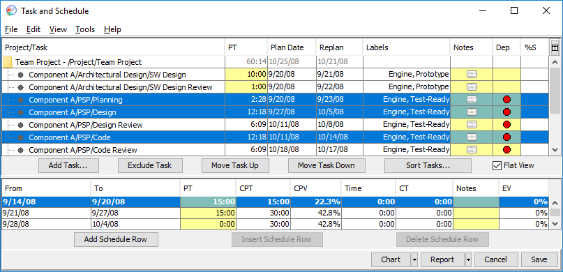
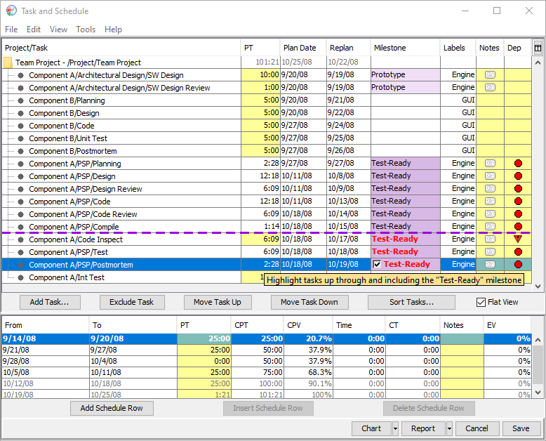

When you joined the team project, the dashboard created an earned value schedule for you to use in tracking your work. During the team project launch, when you synchronized your work breakdown structure, it created tasks and added them to your earned value schedule. In the process, it copied over the initial estimates that you and your team made during the planning process.
During the course of the project, however, you will gain new insights into the tasks assigned to you, and it may become obvious that some of the initial estimates were very inaccurate. When you discover that a task's current time estimate is significantly high or low, you should correct the estimate for that task. One easy way to edit those time estimates is to open your earned value schedule.
In addition, when you add tasks or refine existing tasks, you will need to enter the planned time values for the new tasks. The earned value schedule is a convenient place to edit time estimates.
Open your earned value schedule by clicking the script button and choosing Project Task & Schedule.
If there are problems with your earned value schedule, a red Errors button will appear. Errors will also be highlighted in the task list with red lettering. You can get a short description of the error by hovering the mouse over the red lettering, and a longer description by clicking on the Errors button.
The top half of the window lists the tasks assigned to you. Enter the planned time for various tasks in the PT column. Values that are editable are displayed with a yellow background.
You will generally not perform the tasks in the order they appear in the hierarchy. To define the order you intend to perform the tasks, click the Flat View checkbox. This will display your tasks in a plain list instead of a hierarchy. You can then reorder the tasks by selecting them then dragging them up and down. Defining the task order will allow the dashboard to generate a meaningful report showing tasks that are due to be completed each week.

If your team project is using milestones, the Flat View will include a Milestones column displaying the milestone each task is associated with. If a task is not projected to finish in time to meet a team commit date, this value will turn red and a tooltip will provide additional information. You may be able to resolve this problem by reordering tasks to work on the essential milestones first.
A quick way to reorder milestone tasks is to click the "Sort Tasks" button. This button offers an option to reorder the list so it begins with tasks from the first milestone, followed by tasks from the second milestone, and so on. Tasks that do not belong to any milestone will be sorted last.
For more fine-grained reordering, put your mouse over a cell in the Milestones column and check the box. The Flat View will highlight all of the tasks that need to be completed to meet that milestone, and will draw a dotted purple line indicating the milestone commit date.

Do your best to drag the failing tasks above the commit date line (or drag less urgent tasks below it). If you cannot resolve the problem by changing the order of tasks, you should talk to your team leader or planning manager about the problem. It might be necessary to reassign some of your work to another individual, or renegotiate the commit date with the customer.
The Dep column displays information about task dependencies. If you discover a dependency that was overlooked during team planning, you can double-click on this cell to add it.
The bottom half of the window displays the number of hours and minutes you plan to spend on project work for various periods of time. As your project progresses, you may find that you need to adjust these estimates as well.
It is always helpful to keep track of your personal progress, and understand your personal contributions to the team's goals. You can click the Chart button to see charts and statistics comparing your actual progress to your planned progress. For a printable version of this information, click the Report button. Your earned value schedule will appear in your web browser, and will display charts and tables comparing your actual progress to your plan. Earned value calculations will be used to forecast your actual completion date; if this differs significantly from your plan, you should bring this to the attention of your team planning manager and/or your team leader.
Near the top of this report, you will see a link that reads Show Weekly View. This weekly view displays the tasks that you have completed in the previous week, along with the tasks you had planned to complete by the end of next week. This data is very useful for planning purposes; most teams share and review this information in their weekly team meeting.